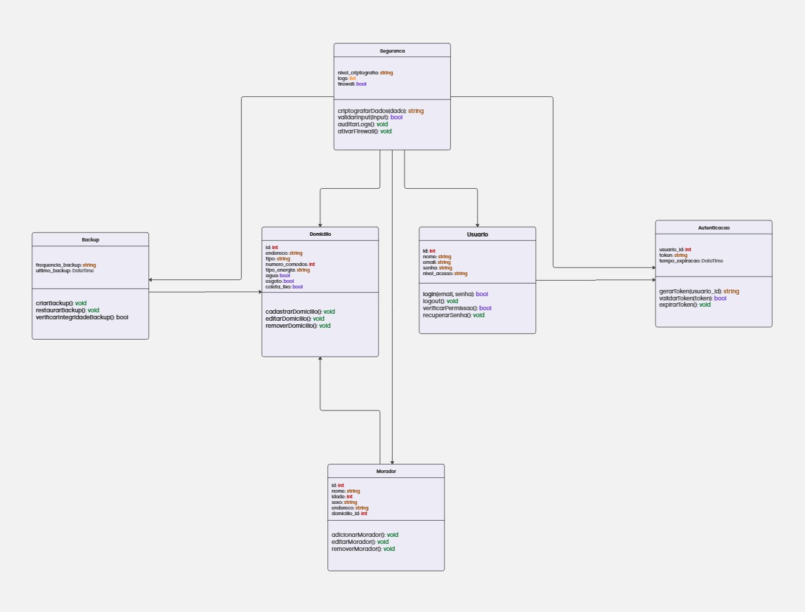
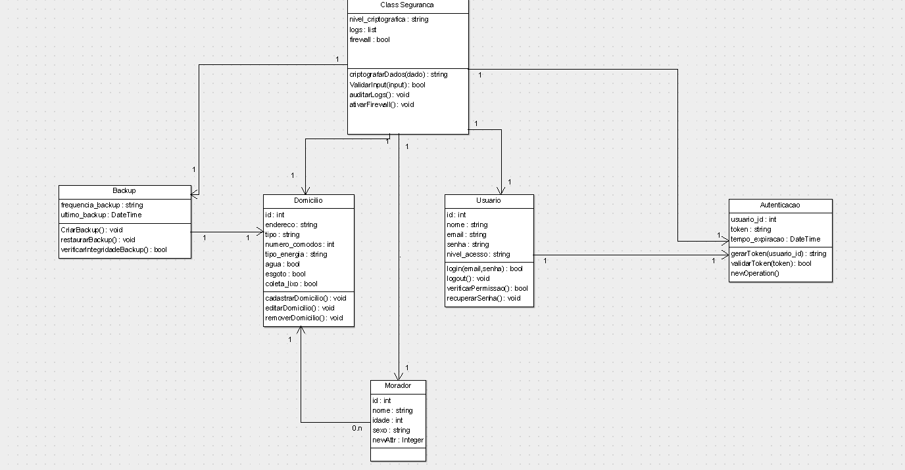

Não precisa entregar para a AP1
Introdução
O diagrama de classes UML é um diagrama que mostra a estrutura do sistema desenhado no nível de classes e interfaces, ilustra as funcionalidades, dependências e relacionamentos de cada elemento. Pode ser vista como uma representação visual da arquitetura de um sistema.
Metodologia
A equipe se reuniu entre os dias 22/03 e 27/03 e realizou um brainstorm onde foram discutidos os tópicos-chave e a arquitetura geral dos sistemas, e assim criamos as primeiras ideias para a implementação. Para a criação da primeira versão do diagrama de classes, Yago Duarte ficou responsável por todo o processo, com a ajuda de alguns participantes. Utilizou-se o programa [Miro] para a elaboração do diagrama. Além disso, a equipe utilizou o [Discord] para videoconferência.
ENTREGUE NO PRÓXIMO INCREMENTO
Diagrama de Classes
Versão 1.0

Versão 2.0

Rastreabilidade de Requisitos
| ID | Descrição |
|---|---|
| US17, US18, US19, US20 | Torneio |
| US01, US06, US07, US08 | Usuário |
| US45 | Rodada |
| US35 | Partida |
Conclusão
Através do diagrama de classes, foi possível representar a estrutura do sistema a nível de classes e auxiliar na modelagem da arquitetura geral, além do banco de dados. Ao longo do desenvolvimento da disciplina, iremos adaptar e evoluir o diagrama e sua documentação para refletir no estado atual do projeto.
Referências
UML Class and Object Diagrams Overview. Disponível em https://www.uml-diagrams.org/class-diagrams-overview.html. Acesso em 21/09/20
Autor(es)
| Data | Versão | Descrição | Autor(es) |
|---|---|---|---|
| 27/03/2025 | 1.0 | Criação do documento | Yago Duarte |